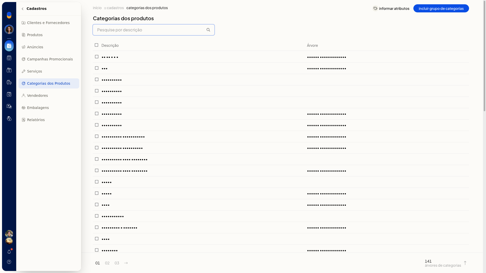
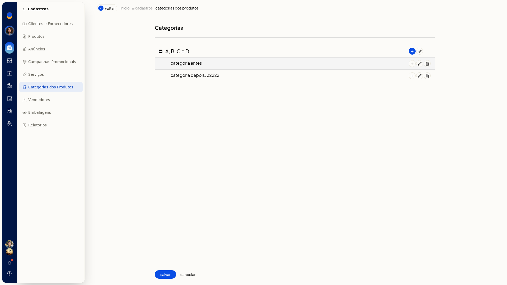
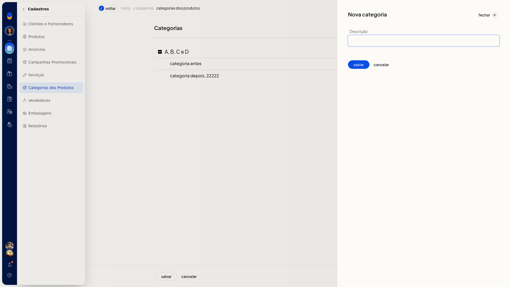
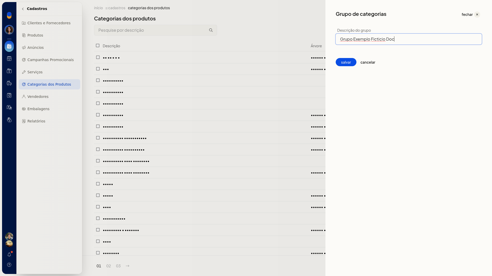
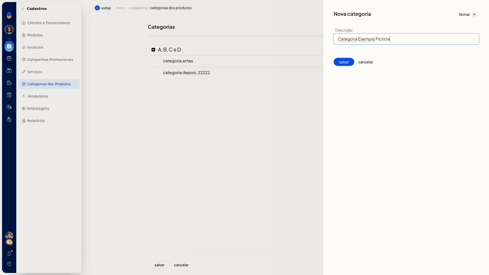
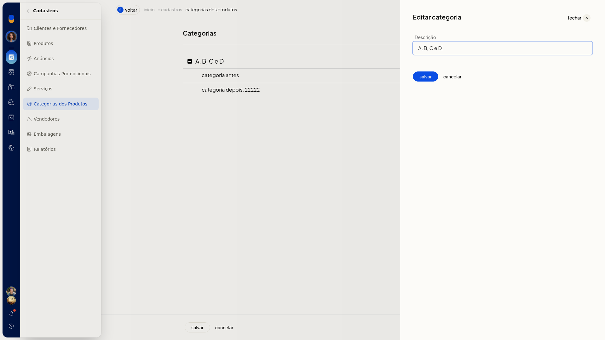
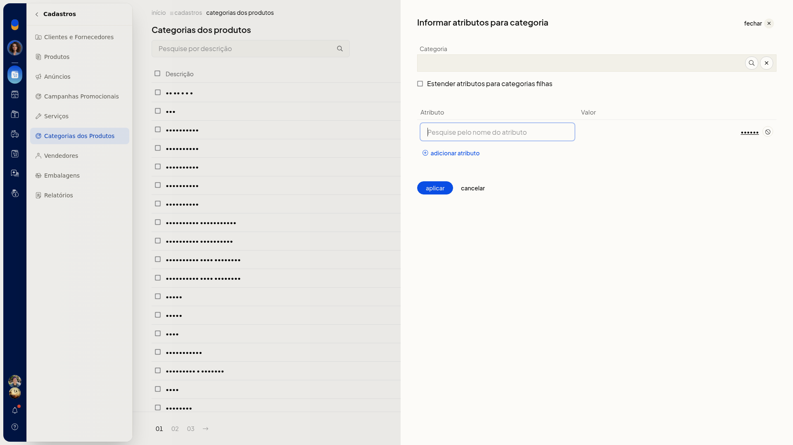

Categorias dos produtos
No ERP da Olist, as categorias dos produtos são um cadastro auxiliar da ficha. Em Cadastros > Categorias dos Produtos, você consulta a lista, abre o grupo e a árvore, inclui ou edita uma categoria e informa atributos para uma categoria já existente.
Importante
- Para informar atributos, a categoria e o atributo já precisam existir.
- No campo Categoria, o texto digitado direto não permanece. Escolha a categoria na busca.
- Um nome de atributo que não existe é indicado como não encontrado.
- Cancelar na edição volta à árvore. Cancelar na árvore volta à lista de categorias.
- Cancelar em Informar atributos volta à lista sem aplicar.
Instruções
Consultar, incluir ou editar uma categoria
-
Acesse Cadastros > Categorias dos Produtos.

-
Na lista, abra o grupo de categorias, a árvore, Nova categoria ou Editar categoria.


-
Preencha o painel aberto. Para sair sem gravar, clique em Cancelar. Na edição, Cancelar volta à árvore. Na árvore, Cancelar volta à lista de categorias.



Informar atributos para uma categoria
-
Em Cadastros > Categorias dos Produtos, clique em Informar atributos.

-
Busque a categoria e confirme no seletor. O campo Categoria é preenchido e o seletor fecha.

-
Se quiser aplicar os mesmos atributos nas categorias abaixo, marque Estender atributos para categorias filhas.
-
Informe Atributo e Valor. Clique em Adicionar atributo para incluir outra linha. Use um atributo já cadastrado.

-
Clique em Aplicar para aplicar os atributos. Para sair sem aplicar, clique em Cancelar.